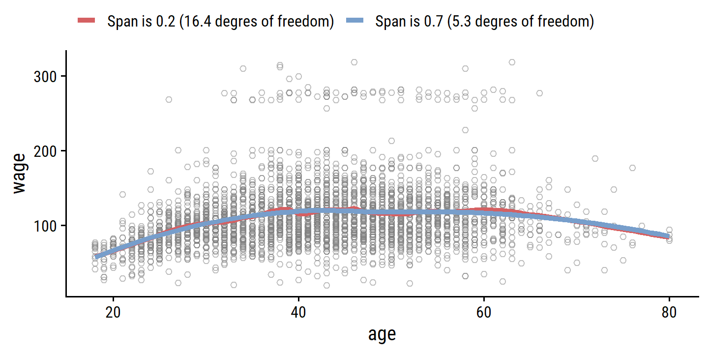

7 Moving Beyond Linearity
Load the packages used in this chapter:
library(tidyverse)
library(tidymodels)
library(broom)
library(gt)
library(patchwork)
library(tictoc)
# Load my R package and set the ggplot theme
library(dunnr)
extrafont::loadfonts(device = "win", quiet = TRUE)
theme_set(theme_td())
set_geom_fonts()
set_palette()In the previous chapter, we saw how to improve upon standard least squares linear regression using ridge regression, the lasso, PCA, and other techniques. In that setting, the complexity of the linear model is reduced to reduce the variance of the estimates. In this chapter, we relax the linearity assumption while still trying to maintain some interpretability, with these methods:
- Polynomial regression extends the linear model by adding extra predictors by raising original predictors to a power.
- Step functions cut the range of a variable into \(K\) distinct regions to produce a qualitative variable.
- Regression splines are a flexible combination of polynomials and step functions that involve polynomial functions fit to data in \(K\) distinct regions.
- Smoothing splines are similar to regression splines but involve a smoothness penalty.
- Local regression is similar to splines but allows smooth overlaps across regions.
- Generalized additive models allows us to extend the above methods to deal with multiple predictors.
7.1 Polynomial Regression
Polynomial regression involves raising one or more predictors to a degree \(d\), each with its own coefficient:
\[ y_i = \beta_0 + \beta_1 x_i + \beta_2 x_i^2 + \beta_3 x_i^3 + \dots + \beta_d x_i^d + \epsilon_i. \]
For a large enough degree \(d\), polynomial regression can produce an extremely non-linear curve, though it is unusual to use \(d\) greater than 3 or 4 because the curve can become overly flexible and produce some strange shapes.
Re-create Figure 7.1 with the wage data:
wage <- ISLR2::Wage
wage_poly_4_linear_fit <- lm(wage ~ poly(age, 4), data = wage)
wage_poly_4_logistic_fit <- glm(I(wage > 250) ~ poly(age, 4),
data = wage, family = binomial)
# Grid of age values for predictions
age_grid <- seq(18, 80, length.out = 63)
p1 <- wage_poly_4_linear_fit %>%
augment(newdata = tibble(age = age_grid), interval = "confidence") %>%
ggplot(aes(x = age)) +
geom_point(data = wage, aes(y = wage),
shape = 21, color = "grey50", alpha = 0.5) +
geom_line(aes(y = .fitted), color = "darkblue", size = 1.5) +
geom_line(aes(y = .lower),
lty = 2, color = "darkblue", size = 1) +
geom_line(aes(y = .upper),
lty = 2, color = "darkblue", size = 1) +
labs(y = "wage")
p2 <- wage_poly_4_logistic_fit %>%
augment(newdata = tibble(age = age_grid),
type.predict = "link", se_fit = TRUE) %>%
mutate(
# Have to compute CIs manually for logistic regression
.lower = .fitted - 1.96 * .se.fit,
.upper = .fitted + 1.96 * .se.fit,
# Convert from log-odds to probability scales
across(c(.fitted, .lower, .upper), ~ exp(.x) / (1 + exp(.x)))
) %>%
ggplot(aes(x = age)) +
geom_rug(data = wage %>% filter(wage > 250),
sides = "t", color = "grey50", alpha = 0.5) +
geom_rug(data = wage %>% filter(wage <= 250),
sides = "b", color = "grey50", alpha = 0.5) +
geom_line(aes(y = .fitted), color = "darkblue", size = 1.5) +
geom_line(aes(y = .lower), lty = 2, color = "darkblue", size = 1) +
geom_line(aes(y = .upper), lty = 2, color = "darkblue", size = 1) +
coord_cartesian(ylim = c(0, 0.2)) +
labs(y = "Pr(wage > 250 | age)")
p1 + p2
7.2 Step Functions
Using polynomial functions of the features as predictors in a linear model imposes a global structure on the non-linear function of \(X\). We can instead use step functions in order to avoid imposing such a global structure. Here we break the range of \(X\) into bins, and fit a different constant in each bin. This amounts to converting a continuous variable into an ordered categorical variable.
This involves using a set of \(K\) cutpoints \(c_k\) which corresponds to dummy variables \(C_k(X)\):
\[ \begin{align} C_0(X) &= I(X < c_1), \\ C_1(X) &= I(c_1 \leq X < c_2), \\ C_2(X) &= I(c_2 \leq X < c_3), \\ &\vdots \\ C_{K-1}(X) &= I(c_{K-1} \leq X < c_K), \\ C_K(X) &= I(c_K \leq X), \end{align} \]
where \(I()\) is an indicator function that returns a 1 or 0 if the condition is true or false. The least squares linear model is then:
\[ y_i = \beta_0 + \beta_1 C_1(x_i) + \beta_2 C_2 (x_i) + \dots + \beta_K C_K (x_i) + \epsilon_i. \]
To re-create Figure 7.2, Ill use cut with 4 breaks to separate the age predictor:
wage_step_linear_fit <- lm(wage ~ cut(age, breaks = 4), data = wage)
wage_step_logistic_fit <- glm(I(wage > 250) ~ cut(age, breaks = 4),
data = wage, family = binomial)
p1 <- wage_step_linear_fit %>%
augment(newdata = tibble(age = age_grid),
interval = "confidence", level = 0.50) %>%
ggplot(aes(x = age)) +
geom_point(data = wage, aes(y = wage),
shape = 21, color = "grey50", alpha = 0.5) +
geom_line(aes(y = .fitted), color = "darkgreen", size = 1.5) +
geom_line(aes(y = .lower),
lty = 2, color = "darkgreen", size = 1) +
geom_line(aes(y = .upper),
lty = 2, color = "darkgreen", size = 1) +
labs(y = "wage")
p2 <- wage_step_logistic_fit %>%
augment(newdata = tibble(age = age_grid),
type.predict = "link", se_fit = TRUE) %>%
mutate(
.lower = .fitted - 1.96 * .se.fit,
.upper = .fitted + 1.96 * .se.fit,
across(c(.fitted, .lower, .upper), ~ exp(.x) / (1 + exp(.x)))
) %>%
ggplot(aes(x = age)) +
geom_rug(data = wage %>% filter(wage > 250),
sides = "t", color = "grey50", alpha = 0.5) +
geom_rug(data = wage %>% filter(wage <= 250),
sides = "b", color = "grey50", alpha = 0.5) +
geom_line(aes(y = .fitted), color = "darkgreen", size = 1.5) +
geom_line(aes(y = .lower), lty = 2, color = "darkgreen", size = 1) +
geom_line(aes(y = .upper), lty = 2, color = "darkgreen", size = 1) +
coord_cartesian(ylim = c(0, 0.2)) +
labs(y = "Pr(wage > 250 | age)")
p1 + p2
Unfortunately, unless there are natural breakpoints in the predictors, piecewise-constant functions can miss the action. For example, in the left- hand panel of Figure 7.2, the first bin clearly misses the increasing trend of
wagewithage. Nevertheless, step function approaches are very popular in biostatistics and epidemiology, among other disciplines. For example, 5-year age groups are often used to define the bins.
7.3 Basis Functions
Polynomial and piecewise-constant regression models are in fact special cases of a basis function approach. The idea is to have at hand a fam ily of functions or transformations that can be applied to a variable \(X\): \(b_1(X), b_2(X), \dots, b_K(X)\). Instead of fitting a linear model in \(X\), we fit the model
\[ y_i = \beta_0 + \beta_1 b_1(x_i) + \beta_2 b_2 (x_i) + \dots + \beta_K b_K (x_i) + \epsilon_i. \]
In polynomial regression, these basis functions were \(b_j(x_i) = x_i^j\). In piecewise-constant regression, they were \(b_j(x_i) = I(c_j \leq x_i < c_{j+1})\). Despite the increased complexity, this still amounts to estimating the unknown regression coefficients \(\beta\), for which all the least squares tools and models apply.
7.4 Regression Splines
7.4.1 Piecewise Polynomials
Instead of fitting a high-degree polynomial over the entire range of \(X\), piecewise polynomial regression involves fitting separate low-degree polynomials over different regions of \(X\). For example, a piecewise cubic polynomial works by fitting a cubic regression model of the form
\[ y_i = \beta_0 + \beta_1 x_i + \beta_2 x_i^2 + \beta_3 x_i^3 + \epsilon_i. \]
where the coefficients \(\beta_0, \beta_1, \beta_2,\) and \(\beta_3\) differ in parts of the range of \(X\). The points where the coefficients change are called knots.
With 0 knots, we have the standard cubic polynomial with \(d = 3\) as described in section 7.1. With a single knot at point \(c\), this takes the form:
\[ \begin{align} y_i &= \beta_{01} + \beta_{11} x_i + \beta_{21} x_i^2 + \beta_{31} x_i^3 + \epsilon_i \ \ \ \text{if} \ \ x_i < c \\ &= \beta_{02} + \beta_{22} x_i + \beta_{22} x_i^2 + \beta_{32} x_i^3 + \epsilon_i \ \ \ \text{if} \ \ x_i \geq c. \end{align} \]
Functionally, this is essentially fitting two separate regression equations on subsets of \(X\), with 8 degrees of freedom for the eight regression coefficients.
7.4.2 Constraints and Splines
The problem with piecewise polynomials is that the resulting fit can be discontinuous, like in the top left panel of Figure 7.3.
To remedy this, we can fit a piecewise polynomial under the constraint that the fitted curve must be continuous, like in the top right panel.
The bottom left panel shows the result of two additional constraints: that the first and second derivative are continuous at age = 50 this is called a cubic spline, which generally has \(K + 4\) degrees of freedom (=5 in this example).
The lower right panel shows a linear spline.
7.4.3 The Spline Basis Representation
In order to implement the continuity constraints for regression splines, we can use the basis model. A cubic spline with \(K\) knots can be modeled as
\[ y_i = \beta_0 + \beta_1 b_1(x_i) + \beta_2 b_2 (x_i) + \dots + \beta_{K+3} b_{K+3} (x_i) + \epsilon_i, \]
for an appropriate choice of basis functions \(b_1, b_2, \dots, b_{K+3}\). The model can then be fit with least squares.
There are many equivalent representations of cubic splines using different basis functions. The most direct is to start with the cubic polynomial and then add one truncated power basis function per knot:
\[ \begin{align} h(x, \xi) = (x - \xi)^2_+ &= (x - \xi)^3 \ \ \ \text{if} \ \ \ x > \xi \\ &= 0 \ \ \ \ \ \ \ \ \ \ \ \ \ \ \text{otherwise}, \end{align} \]
where \(\xi\) is the knot. One can show that adding the term \(\beta_4 h(x, \xi)\) to the cubic spline model above will lead to a discontinuity in only the third derivative at \(\xi\), but remain continuous in the first and second derivatives.
Unfortunately, these splines have high variance at boundaries of the predictors. This can be reduced with natural splines which have additional constraints at the boundaries to produce more stable estimates. We can show this with confidence intervals of the models fit with cubic and natural cubic splines, as in Figure 7.4:
library(splines)
# Use just a subset of the data to mimic the figure
set.seed(20)
d <- wage %>%
filter(wage < 300) %>%
slice_sample(n = 500)
wage_bs_linear_fit <- lm(wage ~ bs(age, knots = c(25, 40, 60)), data = d)
wage_ns_linear_fit <- lm(wage ~ ns(age, knots = c(25, 40, 60)), data = d)
bind_rows(
wage_bs_linear_fit %>%
augment(newdata = tibble(age = age_grid), interval = "confidence") %>%
mutate(model = "Cubic spline"),
wage_ns_linear_fit %>%
augment(newdata = tibble(age = age_grid), interval = "confidence") %>%
mutate(model = "Natural cubic spline")
) %>%
mutate(model = fct_rev(model)) %>%
ggplot(aes(x = age)) +
geom_point(data = d, aes(y = wage),
shape = 21, color = "grey50", alpha = 0.5) +
geom_line(aes(y = .fitted, color = model), size = 1.5) +
geom_line(aes(y = .lower, color = model), lty = 2, size = 1) +
geom_line(aes(y = .upper, color = model), lty = 2, size = 1) +
geom_vline(xintercept = c(25, 40, 60), lty = 2) +
coord_cartesian(ylim = c(40, 300)) +
theme(legend.position = c(0.7, 0.9)) +
labs(color = NULL)
7.4.4 Choosing the Number and Locations of the Knots
When we fit a spline, where should we place the knots? The regression spline is most flexible in regions that contain a lot of knots, because in those regions the polynomial coefficients can change rapidly. Hence, one option is to place more knots in places where we feel the function might vary most rapidly, and to place fewer knots where it seems more stable. While this option can work well, in practice it is common to place knots in a uniform fashion. One way to do this is to specify the desired degrees of freedom, and then have the software automatically place the corresponding number of knots at uniform quantiles of the data.
The splines::ns() function, when provided the df argument, computes knot locations based on percentiles.
For the age data and df = 4 (3 knots):
age_ns <- ns(wage$age, df = 4)
attr(age_ns, "knots")## 25% 50% 75%
## 33.75 42.00 51.00Fit the model and re-create Figure 7.5:
wage_ns_linear_fit <- lm(wage ~ ns(age, df = 4), data = wage)
wage_ns_logistic_fit <- glm(I(wage > 250) ~ ns(age, df = 4),
data = wage, family = binomial)
p1 <- wage_ns_linear_fit %>%
augment(newdata = tibble(age = age_grid), interval = "confidence") %>%
ggplot(aes(x = age)) +
geom_point(data = wage, aes(y = wage),
shape = 21, color = "grey50", alpha = 0.5) +
geom_line(aes(y = .fitted), color = "red", size = 1.5) +
geom_line(aes(y = .lower), color = "red", lty = 2, size = 1) +
geom_line(aes(y = .upper), color = "red", lty = 2, size = 1) +
geom_vline(xintercept = attr(age_ns, "knots"), lty = 2)
p2 <- wage_ns_logistic_fit %>%
augment(newdata = tibble(age = age_grid),
type.predict = "link", se_fit = TRUE) %>%
mutate(
.lower = .fitted - 1.96 * .se.fit,
.upper = .fitted + 1.96 * .se.fit,
across(c(.fitted, .lower, .upper), ~ exp(.x) / (1 + exp(.x)))
) %>%
ggplot(aes(x = age)) +
geom_rug(data = wage %>% filter(wage > 250),
sides = "t", color = "grey50", alpha = 0.5) +
geom_rug(data = wage %>% filter(wage <= 250),
sides = "b", color = "grey50", alpha = 0.5) +
geom_line(aes(y = .fitted), color = "red", size = 1.5) +
geom_line(aes(y = .lower), lty = 2, color = "red", size = 1) +
geom_line(aes(y = .upper), lty = 2, color = "red", size = 1) +
geom_vline(xintercept = attr(age_ns, "knots"), lty = 2) +
coord_cartesian(ylim = c(0, 0.2)) +
labs(y = "Pr(wage > 250 | age)")
p1 + p2
The automatic choice of knot location is usually sufficient, but how do we decide on the number of knots \(K\)?
The same way we usually choose model hyperparameters: resampling.
For this, we turn to tidymodels, which has step_bs() and step_ns() functions for specifying basis splines and natural basis splines.
set.seed(93)
wage_resamples <- vfold_cv(wage, v = 10)
wage_lm_bs_rec <- recipe(wage ~ age, data = wage) %>%
step_bs(age, deg_free = tune(), degree = tune())
wage_lm_ns_rec <- recipe(wage ~ age, data = wage) %>%
step_ns(age, deg_free = tune())
lm_spec <- linear_reg()
wage_lm_bs_workflow <- workflow() %>%
add_model(lm_spec) %>%
add_recipe(wage_lm_bs_rec)
wage_lm_ns_workflow <- workflow() %>%
add_model(lm_spec) %>%
add_recipe(wage_lm_ns_rec)If I understand Figure 7.6 correctly, the results being displayed in the right panel arent all cubic splines because those models cant have <3 degrees of freedom.
For example, if I set degrees of freedom to df = 2 and the polynomial degree of freedom to degree = 3, then bs() will calculate a negative number of knots.
It will automatically adjust df so the number of knots equals 0 and return a warning:
lm(wage ~ bs(age, df = 2, degree = 3), data = wage)## Warning in bs(age, df = 2, degree = 3): 'df' was too small; have used 3##
## Call:
## lm(formula = wage ~ bs(age, df = 2, degree = 3), data = wage)
##
## Coefficients:
## (Intercept) bs(age, df = 2, degree = 3)1
## 58.69 102.64
## bs(age, df = 2, degree = 3)2 bs(age, df = 2, degree = 3)3
## 48.76 40.80So in choosing the hyperparameters for these models, I will vary both deg_free and degree so that it fits a linear spline, quadratic spline, and 7 cubic splines (with varying numbers of knots) as follows:
bs_df_grid <- bind_rows(
tibble(deg_free = 1:3, degree = 1:3),
tibble(deg_free = 4:10, degree = 3)
)
bs_df_grid## # A tibble: 10 x 2
## deg_free degree
## <int> <dbl>
## 1 1 1
## 2 2 2
## 3 3 3
## 4 4 3
## 5 5 3
## 6 6 3
## 7 7 3
## 8 8 3
## 9 9 3
## 10 10 3wage_lm_bs_tune <- tune_grid(
wage_lm_bs_workflow, resamples = wage_resamples,
grid = bs_df_grid
)The way degrees of freedom work in natural splines doesnt require this adjustment, I can just provide deg_free = 1:10:
wage_lm_ns_tune <- tune_grid(
wage_lm_ns_workflow, resamples = wage_resamples,
grid = bs_df_grid %>% select(deg_free)
)Finally, re-create Figure 7.6:
p1 <- collect_metrics(wage_lm_ns_tune) %>%
filter(.metric == "rmse") %>%
mutate(mse = mean^2) %>%
ggplot(aes(x = deg_free, y = mse)) +
geom_line(color = "red") +
geom_point(fill = "red", color = "white", shape = 21, size = 3) +
scale_x_continuous("Degrees of freedom of natural spline",
breaks = seq(2, 10, 2)) +
labs(y = "Mean squared error")
p2 <- collect_metrics(wage_lm_bs_tune) %>%
filter(.metric == "rmse") %>%
mutate(mse = mean^2) %>%
ggplot(aes(x = deg_free, y = mse)) +
geom_line(color = "blue") +
geom_point(fill = "blue", color = "white", shape = 21, size = 3) +
scale_x_continuous("Degrees of freedom of cubic spline",
breaks = seq(2, 10, 2)) +
labs(y = NULL)
p1 + p27.4.5 Comparison to Polynomial Regression
Figure 7.7 compares a natural cubic spline with 15 degrees of freedom to a 15-degree polynomial regression on the wage data:
wage_ns_15_fit <- lm(wage ~ ns(age, df = 15), data = wage)
wage_poly_15_fit <- lm(wage ~ poly(age, degree = 15), data = wage)
bind_rows(
wage_ns_15_fit %>%
augment(newdata = tibble(age = age_grid)) %>%
mutate(model = "Natural cubic spline"),
wage_poly_15_fit %>%
# Extend the age range a bit to see more of the fit
augment(newdata = tibble(age = c(age_grid, 80.5))) %>%
mutate(model = "Polynomial")
) %>%
ggplot(aes(x = age)) +
geom_point(data = wage, aes(y = wage),
shape = 21, color = "grey50", alpha = 0.5) +
geom_line(aes(y = .fitted, color = model), size = 1.5) +
theme(legend.position = c(0.8, 0.8)) +
labs(color = NULL)
The extra flexibility in the polynomial produces undesirable results at the boundaries, while the natural cubic spline still provides a reasonable fit to the data. Regression splines often give superior results to polynomial regression. This is because unlike polynomials, which must use a high degree (exponent in the highest monomial term, e.g.\(X^{15}\)) to produce flexible fits, splines introduce flexibility by increasing the number of knots but keeping the degree fixed. Generally, this approach produces more stable estimates. Splines also allow us to place more knots, and hence flexibility, over regions where the function \(f\) seems to be changing rapidly, and fewer knots where \(f\) appears more stable.
7.5 Smoothing Splines
7.5.1 An Overview of Smoothing Splines
To fit a curve \(g(x)\) to a set of data, we want \(\text{RSS} = \sum_{i=1}^n (y_i - g(x_i))^2\) to be small. If there are no constraints on \(g(x)\), however, then it will simply overfit the data completely for \(\text{RSS} = 0\).
There are a number of ways to ensure that \(g\) is smooth. One way is to find \(g\) that minimizes
\[ \text{RSS} + \lambda \int g'' (t)^2 dt \]
where \(\lambda\) is a non-negative penalty parameter (that will control the bias-variance trade-off as weve seen before). The function \(g\) that minimizes the above is known as a smoothing spline. By placing the constraint on the second derivative \(g''\), we encourage \(g\) to be smooth.
It turns out that the optimal \(g(x)\) is a natural cubic polynomial with knots at unique values of \(x\) (and continuous first and second derivatives at each knot). However, it is not the same one we would get with the basis function approach in Section 7.4.3 with knots at each value of \(x\) rather, it is a shrunken version of that spline, where \(\lambda\) controls the level of shrinkage
7.5.2 Choosing the Smoothing Parameter \(\lambda\)
It may seem like a smoothing spline, with knots at every unique value of \(x_i\), will have far too many degrees of freedom, but the tuning parameter \(\lambda\) controls the effective degrees of freedom \(df_{\lambda}\). The higher \(df_{\lambda}\), the more flexible (lower bias, higher variance) the smoothing spline.
Unlike the other spline methods, we do not need to select the number or location of the knots. We instead have to choose the value of \(\lambda\), usually via cross-validation. It turns out that the LOOCV error can be computed very efficiently for smoothing splines, with essentially the same cost as computing a single fit, with this formula:
\[ \text{RSS}_{cv} (\lambda) = \sum_{i=1}^n (y_i - \hat{g}_{\lambda}^{(-i)} (x_i))^2 = \sum_{i=1}^n \left[\frac{y_i - \hat{g}_{\lambda}(x_i)}{1 - \{\textbf{S}_{\lambda}\}_{ii}}\right]. \]
where \(\hat{g}_{\lambda}^{(-i)}\) is the fitted value for this smoothing spline evaluated at \(x_i\), with the fit using all training observations except for \((x_i, y_i)\).
In contrast, \(\hat{g}_{\lambda}(x_i)\) indicates the smoothing spline function fit to all of the training observations and evaluated at \(x_i\). This remarkable formula says that we can compute each of these leave- one-out fits using only \(\hat{g}_{\lambda}\), the original fit to all of the data! We have a very similar formula (5.2) on page 202 in Chapter 5 for least squares linear regression. Using (5.2), we can very quickly perform LOOCV for the regression splines discussed earlier in this chapter, as well as for least squares regression using arbitrary basis functions.
The smooth.spline() function fits a smoothing spline to data as follows:
wage_smooth_df_16 <- smooth.spline(x = wage$age, y = wage$wage, df = 16)
wage_smooth_df_16## Call:
## smooth.spline(x = wage$age, y = wage$wage, df = 16)
##
## Smoothing Parameter spar= 0.4732071 lambda= 0.0006537868 (13 iterations)
## Equivalent Degrees of Freedom (Df): 16.00237
## Penalized Criterion (RSS): 61597.01
## GCV: 1599.69wage_smooth_cv <- smooth.spline(x = wage$age, y = wage$wage, cv = TRUE)
wage_smooth_cv## Call:
## smooth.spline(x = wage$age, y = wage$wage, cv = TRUE)
##
## Smoothing Parameter spar= 0.6988943 lambda= 0.02792303 (12 iterations)
## Equivalent Degrees of Freedom (Df): 6.794596
## Penalized Criterion (RSS): 75215.9
## PRESS(l.o.o. CV): 1593.383bind_rows(
as_tibble(predict(wage_smooth_df_16, age_grid)) %>%
mutate(model = "16 degrees of freedom"),
as_tibble(predict(wage_smooth_cv, age_grid)) %>%
mutate(model = "6.8 degrees of freedom (LOOCV)")
) %>%
ggplot() +
geom_point(data = wage, aes(x = age, y = wage),
shape = 21, color = "grey50", alpha = 0.5) +
geom_line(aes(x = x, y = y, color = model), size = 1.5) +
theme(legend.position = "top") +
labs(color = NULL)The red curve indicates the fit obtained from pre-specifying that we would like a smoothing spline with 16 effective degrees of freedom. The blue curve is the smoothing spline obtained when \(\lambda\) is chosen using LOOCV; in this case, the value of \(\lambda\) chosen results in 6.8 effective degrees of freedom (computed using (7.13)). For this data, there is little discernible difference between the two smoothing splines, beyond the fact that the one with 16 degrees of freedom seems slightly wigglier. Since there is little difference between the two fits, the smoothing spline fit with 6.8 degrees of freedom is preferable, since in general simpler models are better unless the data provides evidence in support of a more complex model.
7.6 Local Regression
Local regression involves computing the fit at a target point \(x_0\) using just the nearby (local) training observations. It involves a number of choices, such the weighting function \(K\), and whether to fit a linear, constant or quadratic regression. The most important choice is the span \(s\) which is the proportion of points used to compute the local regression at \(x_0\). It is analogous to \(\lambda\) in smoothing splines: the smaller the value \(s\), the more local and flexible the fit; the larger the value, the less flexible.
wage_local_s_0.2 <- loess(wage ~ age, data = wage, span = 0.2)
wage_local_s_0.7 <- loess(wage ~ age, data = wage, span = 0.7)
wage_local_s_0.2; wage_local_s_0.7## Call:
## loess(formula = wage ~ age, data = wage, span = 0.2)
##
## Number of Observations: 3000
## Equivalent Number of Parameters: 16.42
## Residual Standard Error: 39.92## Call:
## loess(formula = wage ~ age, data = wage, span = 0.7)
##
## Number of Observations: 3000
## Equivalent Number of Parameters: 5.3
## Residual Standard Error: 39.9bind_rows(
augment(wage_local_s_0.2, newdata = tibble(age = age_grid)) %>%
mutate(model = "Span is 0.2 (16.4 degres of freedom)"),
augment(wage_local_s_0.7, newdata = tibble(age = age_grid)) %>%
mutate(model = "Span is 0.7 (5.3 degres of freedom)")
) %>%
ggplot(aes(x = age)) +
geom_point(data = wage, aes(y = wage),
shape = 21, color = "grey50", alpha = 0.5) +
geom_line(aes(y = .fitted, color = model), size = 1.5) +
theme(legend.position = "top") +
labs(color = NULL)
7.7 Generalized Additive Models
In previous sections, we have presented approaches for flexibly predicting a response \(Y\) with a single predictor \(X\). Generalized additive models (GAMs) provide a general framework for extending a standard linear model by allowing non-linear functions of each of the variables, while maintaining additivity.
7.7.1 GAMs for Regression Problems
To extend the multiple linear regression model, we replace the coefficient components \(\beta_j x_{ij}\) with smooth non-linear functions \(f_j (x_{ij})\):
\[ y_i = \beta_0 + f_1 (x_{i1}) + f_2 (x_{i2}) + \dots + f_p (x_{ip}) + \epsilon_i. \]
Consider the task of fitting the model:
\[ \texttt{wage} = \beta_0 + f_1(\texttt{year}) + f_2 (\texttt{age}) + f_3 (\texttt{education}) + \epsilon. \]
In the example in Figure 7.11, the quantitative variables year and age are fit using natural splines, and the qualitative variable (with 5 levels) education is fit via the usual dummy variable approach.
wage_gam_ns_fit <- lm(wage ~ ns(year, 4) + ns(age, 5) + education, data = wage)
# Though the model wasn't fit with `gam::gam()`, we can still use the
# `gam::plot.Gam()` function on the `lm` object to retrieve the smooth functions
# Grab the data from the plot object so I can use it in `ggplot2`
d <- invisible(gam::plot.Gam(wage_gam_ns_fit))

d <- map(
d$preplot,
~ tibble(x = .$x, y = .$y, y_se = .$se.y, xlab = .$xlab, ylab = .$ylab) %>%
mutate(y_lower = y - y_se, y_upper = y + y_se)
)
p1 <- d$`ns(year, 4)` %>%
ggplot(aes(x)) +
geom_line(aes(y = y), color = "red") +
geom_line(aes(y = y_lower), lty = 2, color = "red") +
geom_line(aes(y = y_upper), lty = 2, color = "red") +
labs(x = NULL, title = d$`ns(year, 4)`$ylab, y = NULL) +
ylim(c(-20, 20))
p2 <- d$`ns(age, 5)` %>%
ggplot(aes(x)) +
geom_line(aes(y = y), color = "red") +
geom_line(aes(y = y_lower), lty = 2, color = "red") +
geom_line(aes(y = y_upper), lty = 2, color = "red") +
labs(x = NULL, title = d$`ns(age, 5)`$ylab, y = NULL)
p3 <- d$education %>%
ggplot(aes(x)) +
geom_errorbar(aes(y = y, ymin = y_lower, ymax = y_upper)) +
labs(x = NULL, title = d$education$ylab, y = NULL) +
theme(axis.text.x = element_text(angle = 45, size = 8, vjust = 0.7))
p1 + p2 + p3
For Figure 7.12, we use the gam package and specify smoothing splines:
library(gam)## Loaded gam 1.20.1wage_gam_smooth_fit <-
gam(wage ~ s(year, 4) + s(age, 5) + education,
data = wage)
d <- plot(wage_gam_smooth_fit, se = TRUE, col = "blue")

d <- map(
d$preplot,
~ tibble(x = .$x, y = .$y, y_se = .$se.y, xlab = .$xlab, ylab = .$ylab) %>%
mutate(y_lower = y - y_se, y_upper = y + y_se)
)
p1 <- d$`s(year, 4)` %>%
ggplot(aes(x)) +
geom_line(aes(y = y), color = "blue") +
geom_line(aes(y = y_lower), lty = 2, color = "blue") +
geom_line(aes(y = y_upper), lty = 2, color = "blue") +
labs(x = NULL, title = d$`s(year, 4)`$ylab, y = NULL) +
ylim(c(-20, 20))
p2 <- d$`s(age, 5)` %>%
ggplot(aes(x)) +
geom_line(aes(y = y), color = "blue") +
geom_line(aes(y = y_lower), lty = 2, color = "blue") +
geom_line(aes(y = y_upper), lty = 2, color = "blue") +
labs(x = NULL, title = d$`s(age, 5)`$ylab, y = NULL)
p3 <- d$education %>%
ggplot(aes(x)) +
geom_errorbar(aes(y = y, ymin = y_lower, ymax = y_upper)) +
labs(x = NULL, title = d$education$ylab, y = NULL) +
theme(axis.text.x = element_text(angle = 45, size = 8, vjust = 0.7))
p1 + p2 + p3
The fitted functions are essentially equivalent between the natural and smoothing splines.
Fitting a GAM with a smoothing spline is not quite as simple as fitting a GAM with a natural spline, since in the case of smoothing splines, least squares cannot be used. However, standard software such as the
gam()function in R can be used to fit GAMs using smoothing splines, via an approach known as backfitting. This method fits a model involving multiple predictors by backfitting repeatedly updating the fit for each predictor in turn, holding the others fixed. The beauty of this approach is that each time we update a function, we simply apply the fitting method for that variable to a partial residual.
We do not have to use splines as the building blocks for GAMs: we can just as well use local regression, polynomial regression, or any combination of the approaches seen earlier in this chapter in order to create a GAM.
Pros and Cons of GAMs
Pros:
- GAMs allow \(f_j\) fits to each \(X_j\), which is a way to flexibly and (nearly) automatically capture non-linearity.
- Non-linear fits can improve prediction accuracy.
- Because the models are additive, we can examine the effect of each \(X_j\) on \(Y\) separately, while holding others fixed.
- Smoothness of each \(f_j\) can be summarized via degrees of freedom.
Cons:
- The main limitation is the additive restriction. We cannot add interaction terms like \(X_j \times X_k\) to GAMs.
GAMs provide as useful compromise between linear and fully non-parametric models.
7.7.2 GAMs for Classification Problems
GAMs are easily extended to other response distributions via the family argument, such as binomial for logistic regression classification.
wage_gam_fit_binom <- gam(
I(wage > 250) ~ year + s(age, 5) + education,
family = binomial, data = wage
)
d <- plot(wage_gam_fit_binom)
d <- map(
d$preplot,
~ tibble(x = .$x, y = .$y, y_se = .$se.y, xlab = .$xlab, ylab = .$ylab) %>%
mutate(y_lower = y - y_se, y_upper = y + y_se)
)
p1 <- d$year %>%
ggplot(aes(x)) +
geom_line(aes(y = y), color = "green") +
geom_line(aes(y = y_lower), lty = 2, color = "green") +
geom_line(aes(y = y_upper), lty = 2, color = "green") +
labs(x = NULL, title = d$`s(year, 4)`$ylab, y = NULL) +
ylim(c(-4, 4))
p2 <- d$`s(age, 5)` %>%
ggplot(aes(x)) +
geom_line(aes(y = y), color = "green") +
geom_line(aes(y = y_lower), lty = 2, color = "green") +
geom_line(aes(y = y_upper), lty = 2, color = "green") +
labs(x = NULL, title = d$`s(age, 5)`$ylab, y = NULL)
p3 <- d$education %>%
ggplot(aes(x)) +
geom_errorbar(aes(y = y, ymin = y_lower, ymax = y_upper)) +
labs(x = NULL, title = d$education$ylab, y = NULL) +
theme(axis.text.x = element_text(angle = 45, size = 8, vjust = 0.7))
p1 + p2 + p3
There are 0 occurrences of wage > 250 for education = "1. < HS Grad", which is causing very wide SE range.
Re-fit the model excluding that value of education:
wage_gam_fit_binom <- gam(
I(wage > 250) ~ year + s(age, 5) + education,
family = binomial, data = filter(wage, education != "1. < HS Grad")
)
d <- plot(wage_gam_fit_binom)d <- map(
d$preplot,
~ tibble(x = .$x, y = .$y, y_se = .$se.y, xlab = .$xlab, ylab = .$ylab) %>%
mutate(y_lower = y - y_se, y_upper = y + y_se)
)
p1 <- d$year %>%
ggplot(aes(x)) +
geom_line(aes(y = y), color = "green") +
geom_line(aes(y = y_lower), lty = 2, color = "green") +
geom_line(aes(y = y_upper), lty = 2, color = "green") +
labs(x = NULL, title = d$year$ylab, y = NULL) +
ylim(c(-4, 4))
p2 <- d$`s(age, 5)` %>%
ggplot(aes(x)) +
geom_line(aes(y = y), color = "green") +
geom_line(aes(y = y_lower), lty = 2, color = "green") +
geom_line(aes(y = y_upper), lty = 2, color = "green") +
labs(x = NULL, title = d$`s(age, 5)`$ylab, y = NULL)
p3 <- d$education %>%
ggplot(aes(x)) +
geom_errorbar(aes(y = y, ymin = y_lower, ymax = y_upper)) +
labs(x = NULL, title = d$education$ylab, y = NULL) +
theme(axis.text.x = element_text(angle = 45, size = 8, vjust = 0.7))
p1 + p2 + p3
7.8 Lab: Non-linear Modeling
7.8.1 Polynomial Regression and Step Functions
The figure was re-produced in section 7.1.
To determine the simplest sufficient polynomial model, we can perform \(F\)-tests with anova().
wage_poly_1_linear_fit <- lm(wage ~ age, data = wage)
wage_poly_2_linear_fit <- lm(wage ~ poly(age, 2), data = wage)
wage_poly_3_linear_fit <- lm(wage ~ poly(age, 3), data = wage)
wage_poly_5_linear_fit <- lm(wage ~ poly(age, 5), data = wage)
anova(wage_poly_1_linear_fit, wage_poly_2_linear_fit, wage_poly_3_linear_fit,
wage_poly_4_linear_fit, wage_poly_5_linear_fit)## Analysis of Variance Table
##
## Model 1: wage ~ age
## Model 2: wage ~ poly(age, 2)
## Model 3: wage ~ poly(age, 3)
## Model 4: wage ~ poly(age, 4)
## Model 5: wage ~ poly(age, 5)
## Res.Df RSS Df Sum of Sq F Pr(>F)
## 1 2998 5022216
## 2 2997 4793430 1 228786 143.5931 < 2.2e-16 ***
## 3 2996 4777674 1 15756 9.8888 0.001679 **
## 4 2995 4771604 1 6070 3.8098 0.051046 .
## 5 2994 4770322 1 1283 0.8050 0.369682
## ---
## Signif. codes: 0 '***' 0.001 '**' 0.01 '*' 0.05 '.' 0.1 ' ' 1The cubic fit is probably the best choice here.
Equivalently, because of the way poly() created orthogonalized polynomials, we can get the same \(p\)-values and \(F\)-statistics (= square of the \(t\)-statistics) like this:
tidy(wage_poly_5_linear_fit) %>%
transmute(term, t = statistic, `F` = t^2, p = scales::pvalue(p.value)) %>%
gt() %>%
fmt_number(columns = c(t, `F`), n_sigfig = 4)| term | t | F | p |
|---|---|---|---|
| (Intercept) | 153.3 | 23,490 | <0.001 |
| poly(age, 5)1 | 11.20 | 125.4 | <0.001 |
| poly(age, 5)2 | −11.98 | 143.6 | <0.001 |
| poly(age, 5)3 | 3.145 | 9.889 | 0.002 |
| poly(age, 5)4 | −1.952 | 3.810 | 0.051 |
| poly(age, 5)5 | −0.8972 | 0.8050 | 0.370 |
However, this only works because the polynomials are orthogonal and there is just the one predictor.
Otherwise, anova() must be used for these model comparisons.
The step function was fit and visualized in section 7.2.
7.8.2 Splines
The cubic spline and natural spline fits are shown in sections 7.4.3 and 7.4.4. The smoothing spline fits are shown in section 7.5.2, and the local regression fits in section 7.6.
7.8.3 GAMs
Figure 7.11 and 7.12 are re-produced in section 7.7.1.
Use anova() with different variations of the year variable:
wage_gam_no_year <-
gam(wage ~ s(age, 5) + education, data = wage)
wage_gam_linear_year <-
gam(wage ~ year + s(age, 5) + education, data = wage)
anova(wage_gam_no_year, wage_gam_linear_year, wage_gam_smooth_fit, test = "F")## Analysis of Deviance Table
##
## Model 1: wage ~ s(age, 5) + education
## Model 2: wage ~ year + s(age, 5) + education
## Model 3: wage ~ s(year, 4) + s(age, 5) + education
## Resid. Df Resid. Dev Df Deviance F Pr(>F)
## 1 2990 3711731
## 2 2989 3693842 1 17889.2 14.4771 0.0001447 ***
## 3 2986 3689770 3 4071.1 1.0982 0.3485661
## ---
## Signif. codes: 0 '***' 0.001 '**' 0.01 '*' 0.05 '.' 0.1 ' ' 1We find evidence that the linear function of year is preferred, which can also be seen in the model summary():
summary(wage_gam_smooth_fit)##
## Call: gam(formula = wage ~ s(year, 4) + s(age, 5) + education, data = wage)
## Deviance Residuals:
## Min 1Q Median 3Q Max
## -119.43 -19.70 -3.33 14.17 213.48
##
## (Dispersion Parameter for gaussian family taken to be 1235.69)
##
## Null Deviance: 5222086 on 2999 degrees of freedom
## Residual Deviance: 3689770 on 2986 degrees of freedom
## AIC: 29887.75
##
## Number of Local Scoring Iterations: NA
##
## Anova for Parametric Effects
## Df Sum Sq Mean Sq F value Pr(>F)
## s(year, 4) 1 27162 27162 21.981 2.877e-06 ***
## s(age, 5) 1 195338 195338 158.081 < 2.2e-16 ***
## education 4 1069726 267432 216.423 < 2.2e-16 ***
## Residuals 2986 3689770 1236
## ---
## Signif. codes: 0 '***' 0.001 '**' 0.01 '*' 0.05 '.' 0.1 ' ' 1
##
## Anova for Nonparametric Effects
## Npar Df Npar F Pr(F)
## (Intercept)
## s(year, 4) 3 1.086 0.3537
## s(age, 5) 4 32.380 <2e-16 ***
## education
## ---
## Signif. codes: 0 '***' 0.001 '**' 0.01 '*' 0.05 '.' 0.1 ' ' 1We see under Anova for Parametric Effects that all of the terms are statistically significant, for even a linear relationship.
Under Anova for Nonparametric Effects, we see that only the age term has a statistically significant improvement over the linear.
The logistic regression example is in section 7.7.2.
7.9 Exercises
Applied
6. Polynomial and step function regression on wage
- Find the optimal degree \(d\) for polynomial regression.
set.seed(201)
wage_resamples <- vfold_cv(wage, v = 10)
lm_spec <- linear_reg()
wage_poly_spec <- recipe(wage ~ age, data = wage) %>%
step_poly(age, degree = tune())
wage_poly_workflow <- workflow() %>%
add_model(lm_spec) %>%
add_recipe(wage_poly_spec)
degree_grid <- tibble(degree = 1:10)
wage_poly_tune <- tune_grid(wage_poly_workflow, resamples = wage_resamples,
grid = degree_grid)
autoplot(wage_poly_tune) +
scale_x_continuous(breaks = 1:10)The best degree values:
show_best(wage_poly_tune, metric = "rmse")## # A tibble: 5 x 7
## degree .metric .estimator mean n std_err .config
## <int> <chr> <chr> <dbl> <int> <dbl> <chr>
## 1 9 rmse standard 39.8 10 0.868 Preprocessor09_Model1
## 2 7 rmse standard 39.8 10 0.878 Preprocessor07_Model1
## 3 6 rmse standard 39.8 10 0.874 Preprocessor06_Model1
## 4 10 rmse standard 39.8 10 0.870 Preprocessor10_Model1
## 5 5 rmse standard 39.8 10 0.872 Preprocessor05_Model1But it is clear from the above figure that there is little difference past degree 2 or 3.
We can find the least complex model within one standard error of the best model with this function:
(best_degree <- select_by_one_std_err(wage_poly_tune, metric = "rmse", degree))## # A tibble: 1 x 9
## degree .metric .estimator mean n std_err .config .best .bound
## <int> <chr> <chr> <dbl> <int> <dbl> <chr> <dbl> <dbl>
## 1 2 rmse standard 39.9 10 0.882 Preprocessor02_Mod~ 39.8 40.7And here is how the fit looks overlaid on the data:
age_grid <- tibble(age = 18:80)
finalize_workflow(wage_poly_workflow, best_degree) %>%
fit(data = wage) %>%
augment(new_data = age_grid) %>%
ggplot(aes(x = age)) +
geom_point(data = wage, aes(y = wage),
shape = 21, color = "grey50", alpha = 0.5) +
geom_line(aes(y = .pred), color = td_colors$nice$soft_orange, size = 2)
- Find the optimal number of cuts \(K\) for step function regression.
wage_step_spec <- recipe(wage ~ age, data = wage) %>%
#step_cut(age, breaks = tune())
step_discretize(age, num_breaks = tune(),
# Need to adjust this from the default (=10)
min_unique = 2)
wage_step_workflow <- workflow() %>%
add_model(lm_spec) %>%
add_recipe(wage_step_spec)
breaks_grid <- tibble(num_breaks = 2:20)
wage_step_tune <- tune_grid(wage_step_workflow, resamples = wage_resamples,
grid = breaks_grid)
autoplot(wage_step_tune)
show_best(wage_step_tune, metric = "rmse")## # A tibble: 5 x 7
## num_breaks .metric .estimator mean n std_err .config
## <int> <chr> <chr> <dbl> <int> <dbl> <chr>
## 1 20 rmse standard 40.0 10 0.874 Preprocessor19_Model1
## 2 15 rmse standard 40.0 10 0.853 Preprocessor14_Model1
## 3 14 rmse standard 40.0 10 0.871 Preprocessor13_Model1
## 4 19 rmse standard 40.0 10 0.874 Preprocessor18_Model1
## 5 17 rmse standard 40.0 10 0.872 Preprocessor16_Model1The best model by RMSE has the most num_breaks, but within one std_error gives:
(best_num_breaks <-
select_by_one_std_err(wage_step_tune, metric = "rmse", num_breaks))## # A tibble: 1 x 9
## num_breaks .metric .estimator mean n std_err .config .best .bound
## <int> <chr> <chr> <dbl> <int> <dbl> <chr> <dbl> <dbl>
## 1 3 rmse standard 40.7 10 0.831 Preprocessor02~ 40.0 40.9For posterity, here is the best model by RMSE, and best model within one standard error:
bind_rows(
finalize_workflow(wage_step_workflow,
select_best(wage_step_tune, metric = "rmse")) %>%
fit(data = wage) %>%
augment(new_data = age_grid) %>%
mutate(model = "best by RMSE"),
finalize_workflow(wage_step_workflow, best_num_breaks) %>%
fit(data = wage) %>%
augment(new_data = age_grid) %>%
mutate(model = "best within 1 SE")
) %>%
ggplot(aes(x = age)) +
geom_point(data = wage, aes(y = wage),
shape = 21, color = "grey50", alpha = 0.5) +
geom_line(aes(y = .pred, color = model), size = 2) +
theme(legend.position = "top") +
labs(color = NULL)
7.9.0.1 7. Explore other predictors in wage
In tidymodels, the implementation of smooth splines and GAMs uses the mgcv package as the default (and currently only) engine, so Ill use that for this example.
detach("package:gam", unload = TRUE)
library(mgcv)
glimpse(wage)## Rows: 3,000
## Columns: 11
## $ year <int> 2006, 2004, 2003, 2003, 2005, 2008, 2009, 2008, 2006, 2004,~
## $ age <int> 18, 24, 45, 43, 50, 54, 44, 30, 41, 52, 45, 34, 35, 39, 54,~
## $ maritl <fct> 1. Never Married, 1. Never Married, 2. Married, 2. Married,~
## $ race <fct> 1. White, 1. White, 1. White, 3. Asian, 1. White, 1. White,~
## $ education <fct> 1. < HS Grad, 4. College Grad, 3. Some College, 4. College ~
## $ region <fct> 2. Middle Atlantic, 2. Middle Atlantic, 2. Middle Atlantic,~
## $ jobclass <fct> 1. Industrial, 2. Information, 1. Industrial, 2. Informatio~
## $ health <fct> 1. <=Good, 2. >=Very Good, 1. <=Good, 2. >=Very Good, 1. <=~
## $ health_ins <fct> 2. No, 2. No, 1. Yes, 1. Yes, 1. Yes, 1. Yes, 1. Yes, 1. Ye~
## $ logwage <dbl> 4.318063, 4.255273, 4.875061, 5.041393, 4.318063, 4.845098,~
## $ wage <dbl> 75.04315, 70.47602, 130.98218, 154.68529, 75.04315, 127.115~Every other feature in this data set is data set is categorical.
Here is the wage distribution by the different categories:
wage %>%
select(wage, where(is.factor), -education) %>%
rownames_to_column() %>%
pivot_longer(cols = -c(wage, rowname),
names_to = "var", values_to = "val") %>%
ggplot(aes(y = val, x = wage)) +
geom_boxplot() +
facet_wrap(~ var, scales = "free_y", ncol = 2)
Some general observations:
- People with better
healthhave slightly higher wages. - People with
health_inshave higher wages. - People with
jobclass = "Information"have slightly higher wages. maritlstatus has no significant patterns.racehas no significant patterns.- The
regionvariable has a single value.
Since these are all categorical, there arent any new smoothing/spline/polynomial/etc. functions to try out. Instead I will add the variables and determine if they improve the fit:
wage_gam_1 <- gam(wage ~ s(age, k = 5) + s(year, k = 4) + education, data = wage)
summary(wage_gam_1)##
## Family: gaussian
## Link function: identity
##
## Formula:
## wage ~ s(age, k = 5) + s(year, k = 4) + education
##
## Parametric coefficients:
## Estimate Std. Error t value Pr(>|t|)
## (Intercept) 85.529 2.152 39.746 < 2e-16 ***
## education2. HS Grad 10.896 2.429 4.487 7.51e-06 ***
## education3. Some College 23.415 2.556 9.159 < 2e-16 ***
## education4. College Grad 38.058 2.541 14.980 < 2e-16 ***
## education5. Advanced Degree 62.568 2.759 22.682 < 2e-16 ***
## ---
## Signif. codes: 0 '***' 0.001 '**' 0.01 '*' 0.05 '.' 0.1 ' ' 1
##
## Approximate significance of smooth terms:
## edf Ref.df F p-value
## s(age) 3.381 3.787 57.96 < 2e-16 ***
## s(year) 1.073 1.142 11.44 0.000392 ***
## ---
## Signif. codes: 0 '***' 0.001 '**' 0.01 '*' 0.05 '.' 0.1 ' ' 1
##
## R-sq.(adj) = 0.289 Deviance explained = 29.1%
## GCV = 1241.3 Scale est. = 1237.4 n = 3000Like we saw in the lab (section 7.8.3), the year variable can be modeled as linear.
wage_gam_2 <- gam(wage ~ s(age, k = 5) + year + education, data = wage)
summary(wage_gam_2)##
## Family: gaussian
## Link function: identity
##
## Formula:
## wage ~ s(age, k = 5) + year + education
##
## Parametric coefficients:
## Estimate Std. Error t value Pr(>|t|)
## (Intercept) -2261.3683 637.2311 -3.549 0.000393 ***
## year 1.1701 0.3177 3.683 0.000235 ***
## education2. HS Grad 10.9002 2.4285 4.488 7.45e-06 ***
## education3. Some College 23.4227 2.5564 9.163 < 2e-16 ***
## education4. College Grad 38.0606 2.5406 14.981 < 2e-16 ***
## education5. Advanced Degree 62.5714 2.7586 22.683 < 2e-16 ***
## ---
## Signif. codes: 0 '***' 0.001 '**' 0.01 '*' 0.05 '.' 0.1 ' ' 1
##
## Approximate significance of smooth terms:
## edf Ref.df F p-value
## s(age) 3.381 3.787 57.97 <2e-16 ***
## ---
## Signif. codes: 0 '***' 0.001 '**' 0.01 '*' 0.05 '.' 0.1 ' ' 1
##
## R-sq.(adj) = 0.289 Deviance explained = 29.1%
## GCV = 1241.3 Scale est. = 1237.4 n = 3000Now add the new categorical variables:
wage_gam_3 <- gam(
wage ~ s(age, k = 5) + year + education + health + health_ins + jobclass +
maritl + race,
data = wage
)
summary(wage_gam_3)##
## Family: gaussian
## Link function: identity
##
## Formula:
## wage ~ s(age, k = 5) + year + education + health + health_ins +
## jobclass + maritl + race
##
## Parametric coefficients:
## Estimate Std. Error t value Pr(>|t|)
## (Intercept) -2485.6495 612.4533 -4.059 5.07e-05 ***
## year 1.2794 0.3053 4.190 2.87e-05 ***
## education2. HS Grad 7.6142 2.3528 3.236 0.00122 **
## education3. Some College 18.1558 2.5025 7.255 5.10e-13 ***
## education4. College Grad 30.7018 2.5315 12.128 < 2e-16 ***
## education5. Advanced Degree 53.2910 2.7935 19.077 < 2e-16 ***
## health2. >=Very Good 6.2775 1.4111 4.449 8.96e-06 ***
## health_ins2. No -16.5462 1.4018 -11.803 < 2e-16 ***
## jobclass2. Information 3.5045 1.3148 2.665 0.00773 **
## maritl2. Married 13.8176 1.7956 7.695 1.91e-14 ***
## maritl3. Widowed 0.7310 7.9577 0.092 0.92681
## maritl4. Divorced 0.5206 2.9195 0.178 0.85849
## maritl5. Separated 7.7757 4.8456 1.605 0.10867
## race2. Black -4.7753 2.1317 -2.240 0.02516 *
## race3. Asian -2.7584 2.5858 -1.067 0.28616
## race4. Other -5.7192 5.6258 -1.017 0.30943
## ---
## Signif. codes: 0 '***' 0.001 '**' 0.01 '*' 0.05 '.' 0.1 ' ' 1
##
## Approximate significance of smooth terms:
## edf Ref.df F p-value
## s(age) 2.779 3.31 18.21 <2e-16 ***
## ---
## Signif. codes: 0 '***' 0.001 '**' 0.01 '*' 0.05 '.' 0.1 ' ' 1
##
## R-sq.(adj) = 0.346 Deviance explained = 35%
## GCV = 1146.5 Scale est. = 1139.3 n = 3000par(mar = c(1, 1, 1, 1))
plot(wage_gam_3, pages = 1, all.terms = TRUE, shade = TRUE)
It does provide a statistically singificant improvement:
anova(wage_gam_2, wage_gam_3, test = "F")## Analysis of Deviance Table
##
## Model 1: wage ~ s(age, k = 5) + year + education
## Model 2: wage ~ s(age, k = 5) + year + education + health + health_ins +
## jobclass + maritl + race
## Resid. Df Resid. Dev Df Deviance F Pr(>F)
## 1 2990.2 3700651
## 2 2980.7 3396564 9.5239 304087 28.024 < 2.2e-16 ***
## ---
## Signif. codes: 0 '***' 0.001 '**' 0.01 '*' 0.05 '.' 0.1 ' ' 17.9.0.2 8. Non-linear models of auto
auto <- ISLR2::Auto %>%
# Origin is a factor coded as numeric
mutate(
origin = factor(origin, levels = c(1, 2, 3),
labels = c("American", "European", "Japanese"))
)
glimpse(auto)## Rows: 392
## Columns: 9
## $ mpg <dbl> 18, 15, 18, 16, 17, 15, 14, 14, 14, 15, 15, 14, 15, 14, 2~
## $ cylinders <int> 8, 8, 8, 8, 8, 8, 8, 8, 8, 8, 8, 8, 8, 8, 4, 6, 6, 6, 4, ~
## $ displacement <dbl> 307, 350, 318, 304, 302, 429, 454, 440, 455, 390, 383, 34~
## $ horsepower <int> 130, 165, 150, 150, 140, 198, 220, 215, 225, 190, 170, 16~
## $ weight <int> 3504, 3693, 3436, 3433, 3449, 4341, 4354, 4312, 4425, 385~
## $ acceleration <dbl> 12.0, 11.5, 11.0, 12.0, 10.5, 10.0, 9.0, 8.5, 10.0, 8.5, ~
## $ year <int> 70, 70, 70, 70, 70, 70, 70, 70, 70, 70, 70, 70, 70, 70, 7~
## $ origin <fct> American, American, American, American, American, America~
## $ name <fct> chevrolet chevelle malibu, buick skylark 320, plymouth sa~The variables (excluding name) vs mpg:
p1 <- auto %>%
select(mpg, acceleration, displacement, year, horsepower) %>%
rownames_to_column() %>%
pivot_longer(cols = -c(rowname, mpg), names_to = "var") %>%
ggplot(aes(x = value, y = mpg)) +
geom_point() +
geom_smooth(method = "gam") +
facet_wrap(~ var, scales = "free_x")
p2 <- auto %>%
transmute(mpg, cylinders = factor(cylinders), origin) %>%
rownames_to_column() %>%
pivot_longer(cols = -c(rowname, mpg), names_to = "var") %>%
ggplot(aes(y = factor(value), x = mpg)) +
geom_boxplot() +
facet_wrap(~ var, scales = "free_y")
p1 / p2 +
plot_layout(heights = c(2, 1))
Fit a GAM with all of the variables:
auto_gam <- gam(
mpg ~ s(acceleration, k = 5) + s(displacement, k = 5) + s(horsepower, k = 5) +
s(year, k = 5) + s(cylinders, k = 3) + origin,
data = auto
)
summary(auto_gam)##
## Family: gaussian
## Link function: identity
##
## Formula:
## mpg ~ s(acceleration, k = 5) + s(displacement, k = 5) + s(horsepower,
## k = 5) + s(year, k = 5) + s(cylinders, k = 3) + origin
##
## Parametric coefficients:
## Estimate Std. Error t value Pr(>|t|)
## (Intercept) 23.25555 0.22312 104.227 <2e-16 ***
## originEuropean 0.09133 0.52543 0.174 0.8621
## originJapanese 0.86600 0.51939 1.667 0.0963 .
## ---
## Signif. codes: 0 '***' 0.001 '**' 0.01 '*' 0.05 '.' 0.1 ' ' 1
##
## Approximate significance of smooth terms:
## edf Ref.df F p-value
## s(acceleration) 2.364 2.942 10.931 1.64e-06 ***
## s(displacement) 3.305 3.735 11.353 < 2e-16 ***
## s(horsepower) 2.635 3.185 31.694 < 2e-16 ***
## s(year) 3.398 3.796 82.425 < 2e-16 ***
## s(cylinders) 2.000 2.000 3.212 0.0414 *
## ---
## Signif. codes: 0 '***' 0.001 '**' 0.01 '*' 0.05 '.' 0.1 ' ' 1
##
## R-sq.(adj) = 0.873 Deviance explained = 87.8%
## GCV = 8.086 Scale est. = 7.7415 n = 392This suggests that there are non-linear relationships in acceleration, displacement, horsepower, and year.
Visualize the smooth functions:
plot(auto_gam, pages = 1, shade = TRUE)
7.9.0.3 9. Predicting nitrogen oxide concentration in boston
boston <- ISLR2::Boston
glimpse(boston)## Rows: 506
## Columns: 13
## $ crim <dbl> 0.00632, 0.02731, 0.02729, 0.03237, 0.06905, 0.02985, 0.08829,~
## $ zn <dbl> 18.0, 0.0, 0.0, 0.0, 0.0, 0.0, 12.5, 12.5, 12.5, 12.5, 12.5, 1~
## $ indus <dbl> 2.31, 7.07, 7.07, 2.18, 2.18, 2.18, 7.87, 7.87, 7.87, 7.87, 7.~
## $ chas <int> 0, 0, 0, 0, 0, 0, 0, 0, 0, 0, 0, 0, 0, 0, 0, 0, 0, 0, 0, 0, 0,~
## $ nox <dbl> 0.538, 0.469, 0.469, 0.458, 0.458, 0.458, 0.524, 0.524, 0.524,~
## $ rm <dbl> 6.575, 6.421, 7.185, 6.998, 7.147, 6.430, 6.012, 6.172, 5.631,~
## $ age <dbl> 65.2, 78.9, 61.1, 45.8, 54.2, 58.7, 66.6, 96.1, 100.0, 85.9, 9~
## $ dis <dbl> 4.0900, 4.9671, 4.9671, 6.0622, 6.0622, 6.0622, 5.5605, 5.9505~
## $ rad <int> 1, 2, 2, 3, 3, 3, 5, 5, 5, 5, 5, 5, 5, 4, 4, 4, 4, 4, 4, 4, 4,~
## $ tax <dbl> 296, 242, 242, 222, 222, 222, 311, 311, 311, 311, 311, 311, 31~
## $ ptratio <dbl> 15.3, 17.8, 17.8, 18.7, 18.7, 18.7, 15.2, 15.2, 15.2, 15.2, 15~
## $ lstat <dbl> 4.98, 9.14, 4.03, 2.94, 5.33, 5.21, 12.43, 19.15, 29.93, 17.10~
## $ medv <dbl> 24.0, 21.6, 34.7, 33.4, 36.2, 28.7, 22.9, 27.1, 16.5, 18.9, 15~Visualize the nox and dis variables:
p1 <- boston %>%
select(nox, dis) %>%
pivot_longer(cols = c(nox, dis)) %>%
ggplot(aes(x = value)) +
geom_boxplot(aes(y = 0, fill = name), outlier.shape = NA) +
geom_jitter(aes(y = 1, color = name), alpha = 0.5) +
facet_wrap(~ name, scales = "free_x") +
dunnr::remove_axis("y") +
theme(legend.position = "none")
p2 <- boston %>%
ggplot(aes(x = dis, y = nox)) +
geom_point(alpha = 0.5) +
geom_smooth(method = "gam")
p1 / p2
Looks like higher values of dis (the distance from Boston employment centers) are associated with lower nox (nitrogen oxide concentration).
- Cubic polynomial regression.
lm_spec <- linear_reg()
boston_poly_3_recipe <- recipe(nox ~ dis, data = boston) %>%
step_poly(dis, degree = 3)
boston_poly_3_fit <- workflow() %>%
add_recipe(boston_poly_3_recipe) %>%
add_model(lm_spec) %>%
fit(data = boston)
summary(boston_poly_3_fit %>% extract_fit_engine())##
## Call:
## stats::lm(formula = ..y ~ ., data = data)
##
## Residuals:
## Min 1Q Median 3Q Max
## -0.121130 -0.040619 -0.009738 0.023385 0.194904
##
## Coefficients:
## Estimate Std. Error t value Pr(>|t|)
## (Intercept) 0.554695 0.002759 201.021 < 2e-16 ***
## dis_poly_1 -2.003096 0.062071 -32.271 < 2e-16 ***
## dis_poly_2 0.856330 0.062071 13.796 < 2e-16 ***
## dis_poly_3 -0.318049 0.062071 -5.124 4.27e-07 ***
## ---
## Signif. codes: 0 '***' 0.001 '**' 0.01 '*' 0.05 '.' 0.1 ' ' 1
##
## Residual standard error: 0.06207 on 502 degrees of freedom
## Multiple R-squared: 0.7148, Adjusted R-squared: 0.7131
## F-statistic: 419.3 on 3 and 502 DF, p-value: < 2.2e-16Visualize the cubic fit:
dis_grid <- tibble(dis = seq(min(boston$dis), max(boston$dis),
length.out = 100))
boston_poly_3_pred <- bind_cols(
dis_grid,
# I'll use `predict` instead of `augment` because I don't think I can get
# SEs/CIs easily with the latter
predict(boston_poly_3_fit, new_data = dis_grid),
predict(boston_poly_3_fit, new_data = dis_grid, type = "conf_int")
)
p_base <- ggplot(boston, aes(x = dis)) +
geom_point(aes(y = nox), color = "grey50", alpha = 0.5) +
scale_x_continuous(breaks = seq(2, 12, 2))
p_base +
geom_line(data = boston_poly_3_pred, aes(y = .pred),
color = td_colors$nice$spanish_blue, size = 2) +
geom_ribbon(data = boston_poly_3_pred,
aes(ymin = .pred_lower, ymax = .pred_upper),
fill = td_colors$nice$spanish_blue, alpha = 0.5)
- Polynomial fits from 1 to 10 degrees.
Since were not tune()ing the degree parameter on resamples here, just fitting a model for each degree to the full data set, so I cant use the typical tune_grid()/fit_resamples() approach.
boston_recipe <- recipe(nox ~ dis, data = boston)
boston_poly_fits <-
tibble(
degree = 1:10,
poly_fit = map(
degree,
~ workflow() %>%
add_recipe(boston_recipe %>% step_poly(dis, degree = .x)) %>%
add_model(lm_spec) %>%
fit(data = boston)
)
) %>%
mutate(
poly_pred = map(
poly_fit,
~ bind_cols(
dis_grid,
predict(.x, new_data = dis_grid),
predict(.x, new_data = dis_grid, type = "conf_int")
)
),
mod_rss = map_dbl(poly_fit, ~ glance(.x)$deviance)
)
p_base +
geom_line(
data = boston_poly_fits %>%
mutate(
degree_label = fct_inorder(paste0(degree, " (", round(mod_rss, 3), ")"),
ordered = TRUE)
) %>%
unnest(poly_pred),
aes(y = .pred, color = degree_label), size = 1
) +
scale_color_viridis_d(end = 0.8) +
labs(color = "Degree (RSS)") +
coord_cartesian(ylim = c(0.35, 0.9))
- Choose the optimal degree by cross-validation.
Now I can tune():
boston_poly_recipe <- recipe(nox ~ dis, data = boston) %>%
step_poly(dis, degree = tune())
boston_poly_workflow <- workflow() %>%
add_recipe(boston_poly_recipe) %>%
add_model(lm_spec)
degree_grid <- tibble(degree = 1:10)
set.seed(4928)
boston_resamples <- vfold_cv(boston, v = 10)
boston_poly_tune <-
tune_grid(boston_poly_workflow, resamples = boston_resamples,
grid = degree_grid)
autoplot(boston_poly_tune) +
scale_x_continuous(breaks = 1:10)Both the 3-degree and 4-degree fits appear best. I would choose the 3-degree since it is simpler. You could also make a case for the quadratic fit by the one SE rule:
select_by_one_std_err(boston_poly_tune, metric = "rmse", degree)## # A tibble: 1 x 9
## degree .metric .estimator mean n std_err .config .best .bound
## <int> <chr> <chr> <dbl> <int> <dbl> <chr> <dbl> <dbl>
## 1 2 rmse standard 0.0636 10 0.00211 Preprocessor02_M~ 0.0618 0.0641- Regression splines.
With 4 degrees of freedom, a cubic spline has a single knot.
By default, it will be placed at the median of dis:
attr(bs(boston$dis, df = 4), "knots")## 50%
## 3.20745boston_spline_4_recipe <- recipe(nox ~ dis, data = boston) %>%
step_bs(dis, deg_free = 4)
boston_spline_4_fit <- workflow() %>%
add_model(lm_spec) %>%
add_recipe(boston_spline_4_recipe) %>%
fit(data = boston)
extract_fit_engine(boston_spline_4_fit) %>%
summary()##
## Call:
## stats::lm(formula = ..y ~ ., data = data)
##
## Residuals:
## Min 1Q Median 3Q Max
## -0.124622 -0.039259 -0.008514 0.020850 0.193891
##
## Coefficients:
## Estimate Std. Error t value Pr(>|t|)
## (Intercept) 0.73447 0.01460 50.306 < 2e-16 ***
## dis_bs_1 -0.05810 0.02186 -2.658 0.00812 **
## dis_bs_2 -0.46356 0.02366 -19.596 < 2e-16 ***
## dis_bs_3 -0.19979 0.04311 -4.634 4.58e-06 ***
## dis_bs_4 -0.38881 0.04551 -8.544 < 2e-16 ***
## ---
## Signif. codes: 0 '***' 0.001 '**' 0.01 '*' 0.05 '.' 0.1 ' ' 1
##
## Residual standard error: 0.06195 on 501 degrees of freedom
## Multiple R-squared: 0.7164, Adjusted R-squared: 0.7142
## F-statistic: 316.5 on 4 and 501 DF, p-value: < 2.2e-16boston_spline_4_pred <- bind_cols(
dis_grid,
predict(boston_spline_4_fit, new_data = dis_grid),
predict(boston_spline_4_fit, new_data = dis_grid, type = "conf_int")
)
p_base +
geom_line(data = boston_spline_4_pred, aes(y = .pred),
color = td_colors$nice$ruby_red, size = 2) +
geom_ribbon(data = boston_spline_4_pred,
aes(ymin = .pred_lower, ymax = .pred_upper),
fill = td_colors$nice$ruby_red, alpha = 0.5)
- Regression splines for a range of degrees of freedom.
Ill range deg_free from 3 (no knots) to 10 (7 knots):
boston_spline_fits <-
tibble(
deg_free = 3:10,
spline_fit = map(
deg_free,
~ workflow() %>%
add_recipe(boston_recipe %>% step_bs(dis, deg_free = .x)) %>%
add_model(lm_spec) %>%
fit(data = boston)
)
) %>%
mutate(
spline_pred = map(
spline_fit,
~ bind_cols(
dis_grid,
predict(.x, new_data = dis_grid),
predict(.x, new_data = dis_grid, type = "conf_int")
)
),
mod_rss = map_dbl(spline_fit, ~ glance(.x)$deviance)
)
p_base +
geom_line(
data = boston_spline_fits %>%
mutate(
df_label = fct_inorder(paste0(deg_free, " (", round(mod_rss, 3), ")"),
ordered = TRUE)
) %>%
unnest(spline_pred),
aes(y = .pred, color = df_label), size = 1
) +
scale_color_viridis_d(end = 0.8) +
labs(color = "df (RSS)") +
coord_cartesian(ylim = c(0.35, 0.9))
- Choose the optimal degrees of freedom by cross-validation
boston_spline_recipe <- recipe(nox ~ dis, data = boston) %>%
step_bs(dis, deg_free = tune())
boston_spline_workflow <- workflow() %>%
add_recipe(boston_spline_recipe) %>%
add_model(lm_spec)
deg_free_grid <- tibble(deg_free = 3:15)boston_spline_tune <-
tune_grid(boston_spline_workflow, resamples = boston_resamples,
grid = deg_free_grid)autoplot(boston_spline_tune) +
scale_x_continuous(breaks = 3:15)
The RMSE estimates are a bit noisier than I would like. The best model within one SE:
select_by_one_std_err(boston_spline_tune, metric = "rmse", deg_free)## # A tibble: 1 x 9
## deg_free .metric .estimator mean n std_err .config .best .bound
## <int> <chr> <chr> <dbl> <int> <dbl> <chr> <dbl> <dbl>
## 1 3 rmse standard 0.0618 10 0.00235 Preprocessor01~ 0.0603 0.0626From the plot, it might be surprising that the best model has 0 knots (deg_free = 3), but relative to the standard errors, there isnt a huge improvement for larger values.
An alternative way of choosing the model is by percent loss via tune::select_by_pct_loss().
The best model here has an RMSE of
0.0603.
The deg_free = 3 model has an RMSE of
0.0618.
This corresponds to a percentage loss of
(0.0618 - 0.0603) /
0.0603 * 100 =
2.5%.
We can choose an upper limit of acceptable percent loss in tune::select_by_pct_loss() the default is limit = 2 which eliminiates deg_free = 3 as an option:
select_by_pct_loss(boston_spline_tune, metric = "rmse", deg_free)## # A tibble: 1 x 9
## deg_free .metric .estimator mean n std_err .config .best .loss
## <int> <chr> <chr> <dbl> <int> <dbl> <chr> <dbl> <dbl>
## 1 9 rmse standard 0.0607 10 0.00245 Preprocessor07_~ 0.0603 0.712By percent loss, deg_free = 9 is chosen.
7.9.0.4 10. Predicting tuition with college
7.9.1 delete
The tidymodels implementation of smooth splines and GAMs uses the mgcv package as the default (and currently only) engine, so Ill use that for this example:
See some examples in the parsnip documentation [here]
(https://parsnip.tidymodels.org/articles/Examples.html?q=additiv#gen_additive_mod-models)
and [here]
(https://parsnip.tidymodels.org/reference/details_gen_additive_mod_mgcv.html?q=gen_additive#model-fitting).
An example of tuning degrees of freedom can be found here.
wage_smooth_fit_16 <-
as_tibble(predict(wage_smooth_df_16, age_grid)) %>%
mutate(model = "smooth.spline()") %>%
rename(age = x, .fitted = y)
detach("package:mgcv", unload = TRUE)
library(gam)
wage_gam_fit_16 <- gam(wage ~ s(age, df = 16), data = wage)
wage_gam_fit_16_pred <-
augment(wage_gam_fit_16, newdata = tibble(age = age_grid)) %>%
mutate(model = "gam()")
detach("package:gam", unload = TRUE)
library(mgcv)
wage_mgcv_fit_16 <- gam(wage ~ s(age, k = 16, fx = TRUE), data = wage)
wage_mgcv_fit_16_pred <-
augment(wage_mgcv_fit_16, newdata = tibble(age = age_grid)) %>%
mutate(model = "mgcv()")
wage_tidymodels_fit <- gen_additive_mod(select_features = FALSE, adjust_deg_free = 6) %>%
set_engine("mgcv") %>%
set_mode("regression") %>%
fit(wage ~ s(age, k = 16, fx = TRUE), data = wage)
wage_tidymodels_fit_pred <-
augment(wage_tidymodels_fit, new_data = tibble(age = age_grid)) %>%
mutate(model = "tidymodels")
bind_rows(
# wage_smooth_fit_16,
# wage_gam_fit_16_pred,
wage_mgcv_fit_16_pred,
wage_tidymodels_fit_pred
) %>%
ggplot(aes(x = age)) +
# geom_point(data = wage, aes(x = age, y = wage),
# shape = 21, color = "grey50", alpha = 0.5) +
geom_line(aes(y = .fitted, color = model), size = 1.5, alpha = 0.5) +
theme(legend.position = c(0.7, 0.7)) +
labs(color = NULL)
#facet_wrap(~ model)gam_spec <- gen_additive_mod(select_features = FALSE, adjust_deg_free = tune()) %>%
set_engine(engine = 'mgcv') %>%
set_mode('regression')
wage_gam_workflow <- workflow() %>%
add_model(gam_spec) %>%
add_recipe()
wage_resamples
fit_resamples(object = )
wage_tidymodels_fit <- gen_additive_mod(select_features = FALSE, adjust_deg_free = 6) %>%
set_engine("mgcv") %>%
set_mode("regression") %>%
fit(wage ~ s(age, k = 16, fx = TRUE), data = wage)
# fitting gam model
gam_mod <- fit(gam_spec, interest_rate ~ s(annual_income) + s(debt_to_income) + s(delinq_2y), data = loans)Reproducibility
Sys.time()## [1] "2022-04-16 22:17:57 AST"if ("git2r" %in% installed.packages()) {
if (git2r::in_repository()) {
git2r::repository()
}
}## Local: main C:/Users/tdunn/Documents/learning/islr-tidy
## Remote: main @ origin (https://github.com/taylordunn/islr-tidy)
## Head: [6db93f0] 2022-04-16: Started the exercisessessioninfo::session_info()## - Session info ---------------------------------------------------------------
## setting value
## version R version 4.1.3 (2022-03-10)
## os Windows 10 x64
## system x86_64, mingw32
## ui RTerm
## language (EN)
## collate English_Canada.1252
## ctype English_Canada.1252
## tz America/Curacao
## date 2022-04-16
##
## - Packages -------------------------------------------------------------------
## package * version date lib
## abind 1.4-5 2016-07-21 [1]
## assertthat 0.2.1 2019-03-21 [1]
## backports 1.2.1 2020-12-09 [1]
## base64enc 0.1-3 2015-07-28 [1]
## bayestestR 0.10.5 2021-07-26 [1]
## BiocParallel 1.28.3 2021-12-09 [1]
## bit 4.0.4 2020-08-04 [1]
## bit64 4.0.5 2020-08-30 [1]
## bookdown 0.24 2021-09-02 [1]
## boot 1.3-28 2021-05-03 [2]
## broom * 0.7.10 2021-10-31 [1]
## bslib 0.2.5.1 2021-05-18 [1]
## cachem 1.0.6 2021-08-19 [1]
## car 3.0-12 2021-11-06 [1]
## carData 3.0-4 2020-05-22 [1]
## cellranger 1.1.0 2016-07-27 [1]
## checkmate 2.0.0 2020-02-06 [1]
## class 7.3-20 2022-01-16 [2]
## cli 3.2.0 2022-02-14 [1]
## coda 0.19-4 2020-09-30 [1]
## codetools 0.2-18 2020-11-04 [2]
## colorspace 2.0-3 2022-02-21 [1]
## combinat 0.0-8 2012-10-29 [1]
## conflicted 1.0.4 2019-06-21 [1]
## corpcor 1.6.10 2021-09-16 [1]
## corrr * 0.4.3 2020-11-24 [1]
## crayon 1.5.1 2022-03-26 [1]
## datawizard 0.1.0 2021-06-18 [1]
## DBI 1.1.2 2021-12-20 [1]
## dbplyr 2.1.1 2021-04-06 [1]
## DEoptimR 1.0-9 2021-05-24 [1]
## dials * 0.0.10 2021-09-10 [1]
## DiceDesign 1.9 2021-02-13 [1]
## digest 0.6.29 2021-12-01 [1]
## discrim * 0.1.3 2021-07-21 [1]
## distill 1.3 2021-10-13 [1]
## distributional 0.2.2 2021-02-02 [1]
## doParallel * 1.0.16 2020-10-16 [1]
## downlit 0.4.0 2021-10-29 [1]
## dplyr * 1.0.8 2022-02-08 [1]
## dunnr * 0.2.5 2022-01-15 [1]
## effectsize 0.4.5 2021-05-25 [1]
## ellipse 0.4.2 2020-05-27 [1]
## ellipsis 0.3.2 2021-04-29 [1]
## emmeans 1.7.0 2021-09-29 [1]
## equatiomatic 0.2.0 2021-01-30 [1]
## estimability 1.3 2018-02-11 [1]
## evaluate 0.14 2019-05-28 [1]
## extrafont 0.17 2014-12-08 [1]
## extrafontdb 1.0 2012-06-11 [1]
## fansi 1.0.3 2022-03-24 [1]
## farver 2.1.0 2021-02-28 [1]
## fastmap 1.1.0 2021-01-25 [1]
## forcats * 0.5.1 2021-01-27 [1]
## foreach * 1.5.2 2022-02-02 [1]
## fs 1.5.2 2021-12-08 [1]
## furrr 0.2.3 2021-06-25 [1]
## future * 1.24.0 2022-02-19 [1]
## future.apply 1.8.1 2021-08-10 [1]
## generics 0.1.2 2022-01-31 [1]
## GGally 2.1.2 2021-06-21 [1]
## ggdist * 3.0.0 2021-07-19 [1]
## ggplot2 * 3.3.5 2021-06-25 [1]
## ggrepel 0.9.1 2021-01-15 [1]
## ggridges 0.5.3 2021-01-08 [1]
## git2r 0.28.0 2021-01-10 [1]
## glmnet * 4.1-3 2021-11-02 [1]
## globals 0.14.0 2020-11-22 [1]
## glue 1.6.2 2022-02-24 [1]
## gower 0.2.2 2020-06-23 [1]
## GPfit 1.0-8 2019-02-08 [1]
## gridExtra 2.3 2017-09-09 [1]
## gt * 0.3.1 2021-08-07 [1]
## gtable 0.3.0 2019-03-25 [1]
## hardhat 0.2.0 2022-01-24 [1]
## haven 2.4.1 2021-04-23 [1]
## here * 1.0.1 2020-12-13 [1]
## highr 0.9 2021-04-16 [1]
## hms 1.1.1 2021-09-26 [1]
## htmltools 0.5.2 2021-08-25 [1]
## httpuv 1.6.5 2022-01-05 [1]
## httr 1.4.2 2020-07-20 [1]
## igraph 1.2.11 2022-01-04 [1]
## infer * 1.0.0 2021-08-13 [1]
## insight 0.14.2 2021-06-22 [1]
## ipred 0.9-12 2021-09-15 [1]
## ISLR2 * 1.3-1 2022-01-10 [1]
## iterators * 1.0.14 2022-02-05 [1]
## janitor 2.1.0 2021-01-05 [1]
## jquerylib 0.1.4 2021-04-26 [1]
## jsonlite 1.7.3 2022-01-17 [1]
## kknn 1.3.1 2016-03-26 [1]
## klaR 0.6-15 2020-02-19 [1]
## knitr 1.37 2021-12-16 [1]
## labeling 0.4.2 2020-10-20 [1]
## labelled 2.8.0 2021-03-08 [1]
## later 1.3.0 2021-08-18 [1]
## lattice * 0.20-45 2021-09-22 [2]
## lava 1.6.10 2021-09-02 [1]
## leaps * 3.1 2020-01-16 [1]
## lhs 1.1.1 2020-10-05 [1]
## lifecycle 1.0.1 2021-09-24 [1]
## listenv 0.8.0 2019-12-05 [1]
## lubridate 1.8.0 2021-10-07 [1]
## magrittr 2.0.2 2022-01-26 [1]
## MASS * 7.3-55 2022-01-16 [2]
## Matrix * 1.4-0 2021-12-08 [2]
## matrixStats 0.61.0 2021-09-17 [1]
## memoise 2.0.1 2021-11-26 [1]
## MetBrewer 0.1.0 2022-01-05 [1]
## mgcv * 1.8-40 2022-03-29 [1]
## mime 0.12 2021-09-28 [1]
## miniUI 0.1.1.1 2018-05-18 [1]
## mixOmics * 6.19.3 2022-04-04 [1]
## modeldata * 0.1.1 2021-07-14 [1]
## modelr 0.1.8 2020-05-19 [1]
## munsell 0.5.0 2018-06-12 [1]
## mvtnorm * 1.1-3 2021-10-08 [1]
## nlme * 3.1-155 2022-01-16 [2]
## nnet 7.3-17 2022-01-16 [2]
## parallelly 1.30.0 2021-12-17 [1]
## parameters 0.14.0 2021-05-29 [1]
## parsnip * 0.1.7 2021-07-21 [1]
## patchwork * 1.1.1 2020-12-17 [1]
## performance 0.7.3 2021-07-21 [1]
## pillar 1.7.0 2022-02-01 [1]
## pkgconfig 2.0.3 2019-09-22 [1]
## pls * 2.8-0 2021-09-03 [1]
## plyr 1.8.7 2022-03-24 [1]
## poissonreg * 0.1.1 2021-08-07 [1]
## prettyunits 1.1.1 2020-01-24 [1]
## pROC 1.17.0.1 2021-01-13 [1]
## prodlim 2019.11.13 2019-11-17 [1]
## promises 1.2.0.1 2021-02-11 [1]
## purrr * 0.3.4 2020-04-17 [1]
## qqplotr 0.0.5 2021-04-23 [1]
## questionr 0.7.5 2021-10-06 [1]
## R6 2.5.1 2021-08-19 [1]
## rARPACK 0.11-0 2016-03-10 [1]
## RColorBrewer 1.1-3 2022-04-03 [1]
## Rcpp 1.0.8.3 2022-03-17 [1]
## readr * 2.1.1 2021-11-30 [1]
## readxl 1.3.1 2019-03-13 [1]
## recipes * 0.1.17 2021-09-27 [1]
## repr 1.1.3 2021-01-21 [1]
## reprex 2.0.0 2021-04-02 [1]
## reshape 0.8.8 2018-10-23 [1]
## reshape2 1.4.4 2020-04-09 [1]
## rlang * 1.0.2 2022-03-04 [1]
## rmarkdown 2.11 2021-09-14 [1]
## robustbase 0.93-8 2021-06-02 [1]
## rpart 4.1.16 2022-01-24 [2]
## rprojroot 2.0.2 2020-11-15 [1]
## rsample * 0.1.0 2021-05-08 [1]
## RSpectra 0.16-0 2019-12-01 [1]
## rstudioapi 0.13 2020-11-12 [1]
## Rttf2pt1 1.3.8 2020-01-10 [1]
## rvest 1.0.0 2021-03-09 [1]
## sass 0.4.0 2021-05-12 [1]
## scales * 1.1.1 2020-05-11 [1]
## see 0.6.4 2021-05-29 [1]
## sessioninfo 1.1.1 2018-11-05 [1]
## shape 1.4.6 2021-05-19 [1]
## shiny 1.6.0 2021-01-25 [1]
## skimr 2.1.3 2021-03-07 [1]
## snakecase 0.11.0 2019-05-25 [1]
## stringi 1.7.6 2021-11-29 [1]
## stringr * 1.4.0 2019-02-10 [1]
## survival 3.2-13 2021-08-24 [2]
## tibble * 3.1.6 2021-11-07 [1]
## tictoc * 1.0.1 2021-04-19 [1]
## tidymodels * 0.1.4 2021-10-01 [1]
## tidyr * 1.2.0 2022-02-01 [1]
## tidyselect 1.1.2 2022-02-21 [1]
## tidyverse * 1.3.1 2021-04-15 [1]
## timeDate 3043.102 2018-02-21 [1]
## tune * 0.1.6 2021-07-21 [1]
## tzdb 0.2.0 2021-10-27 [1]
## usethis 2.1.5 2021-12-09 [1]
## utf8 1.2.2 2021-07-24 [1]
## vctrs * 0.3.8 2021-04-29 [1]
## viridisLite 0.4.0 2021-04-13 [1]
## vroom 1.5.7 2021-11-30 [1]
## withr 2.5.0 2022-03-03 [1]
## workflows * 0.2.3 2021-07-16 [1]
## workflowsets * 0.1.0 2021-07-22 [1]
## xfun 0.29 2021-12-14 [1]
## xml2 1.3.3 2021-11-30 [1]
## xtable 1.8-4 2019-04-21 [1]
## yaml 2.2.1 2020-02-01 [1]
## yardstick * 0.0.8 2021-03-28 [1]
## source
## CRAN (R 4.1.1)
## CRAN (R 4.1.0)
## CRAN (R 4.1.0)
## CRAN (R 4.1.0)
## CRAN (R 4.1.0)
## Bioconductor
## CRAN (R 4.1.2)
## CRAN (R 4.1.2)
## CRAN (R 4.1.1)
## CRAN (R 4.1.3)
## CRAN (R 4.1.2)
## CRAN (R 4.1.0)
## CRAN (R 4.1.1)
## CRAN (R 4.1.2)
## CRAN (R 4.1.1)
## CRAN (R 4.1.0)
## CRAN (R 4.1.0)
## CRAN (R 4.1.3)
## CRAN (R 4.1.3)
## CRAN (R 4.1.0)
## CRAN (R 4.1.3)
## CRAN (R 4.1.3)
## CRAN (R 4.1.1)
## CRAN (R 4.1.0)
## CRAN (R 4.1.1)
## CRAN (R 4.1.0)
## CRAN (R 4.1.3)
## CRAN (R 4.1.0)
## CRAN (R 4.1.2)
## CRAN (R 4.1.0)
## CRAN (R 4.1.0)
## CRAN (R 4.1.1)
## CRAN (R 4.1.0)
## CRAN (R 4.1.2)
## CRAN (R 4.1.2)
## CRAN (R 4.1.2)
## CRAN (R 4.1.2)
## CRAN (R 4.1.1)
## CRAN (R 4.1.1)
## CRAN (R 4.1.3)
## Github (taylordunn/dunnr@c83b30e)
## CRAN (R 4.1.0)
## CRAN (R 4.1.3)
## CRAN (R 4.1.0)
## CRAN (R 4.1.2)
## CRAN (R 4.1.0)
## CRAN (R 4.1.1)
## CRAN (R 4.1.0)
## CRAN (R 4.1.0)
## CRAN (R 4.1.0)
## CRAN (R 4.1.3)
## CRAN (R 4.1.0)
## CRAN (R 4.1.0)
## CRAN (R 4.1.0)
## CRAN (R 4.1.3)
## CRAN (R 4.1.2)
## CRAN (R 4.1.2)
## CRAN (R 4.1.3)
## CRAN (R 4.1.3)
## CRAN (R 4.1.3)
## CRAN (R 4.1.0)
## CRAN (R 4.1.2)
## CRAN (R 4.1.0)
## CRAN (R 4.1.0)
## CRAN (R 4.1.0)
## CRAN (R 4.1.0)
## CRAN (R 4.1.1)
## CRAN (R 4.1.0)
## CRAN (R 4.1.3)
## CRAN (R 4.1.0)
## CRAN (R 4.1.0)
## CRAN (R 4.1.0)
## CRAN (R 4.1.2)
## CRAN (R 4.1.0)
## CRAN (R 4.1.3)
## CRAN (R 4.1.0)
## CRAN (R 4.1.0)
## CRAN (R 4.1.0)
## CRAN (R 4.1.2)
## CRAN (R 4.1.1)
## CRAN (R 4.1.2)
## CRAN (R 4.1.0)
## CRAN (R 4.1.3)
## CRAN (R 4.1.1)
## CRAN (R 4.1.0)
## CRAN (R 4.1.1)
## CRAN (R 4.1.2)
## CRAN (R 4.1.3)
## CRAN (R 4.1.1)
## CRAN (R 4.1.0)
## CRAN (R 4.1.2)
## CRAN (R 4.1.2)
## CRAN (R 4.1.2)
## CRAN (R 4.1.2)
## CRAN (R 4.1.0)
## CRAN (R 4.1.0)
## CRAN (R 4.1.2)
## CRAN (R 4.1.3)
## CRAN (R 4.1.3)
## CRAN (R 4.1.3)
## CRAN (R 4.1.0)
## CRAN (R 4.1.1)
## CRAN (R 4.1.0)
## CRAN (R 4.1.1)
## CRAN (R 4.1.3)
## CRAN (R 4.1.3)
## CRAN (R 4.1.3)
## CRAN (R 4.1.1)
## CRAN (R 4.1.2)
## CRAN (R 4.1.2)
## CRAN (R 4.1.3)
## CRAN (R 4.1.1)
## CRAN (R 4.1.1)
## Github (mixOmicsTeam/mixOmics@974a8c9)
## CRAN (R 4.1.0)
## CRAN (R 4.1.0)
## CRAN (R 4.1.0)
## CRAN (R 4.1.1)
## CRAN (R 4.1.3)
## CRAN (R 4.1.3)
## CRAN (R 4.1.2)
## CRAN (R 4.1.0)
## CRAN (R 4.1.0)
## CRAN (R 4.1.0)
## CRAN (R 4.1.1)
## CRAN (R 4.1.2)
## CRAN (R 4.1.0)
## CRAN (R 4.1.3)
## CRAN (R 4.1.3)
## CRAN (R 4.1.2)
## CRAN (R 4.1.0)
## CRAN (R 4.1.0)
## CRAN (R 4.1.0)
## CRAN (R 4.1.0)
## CRAN (R 4.1.2)
## CRAN (R 4.1.0)
## CRAN (R 4.1.2)
## CRAN (R 4.1.1)
## CRAN (R 4.1.3)
## CRAN (R 4.1.3)
## CRAN (R 4.1.3)
## CRAN (R 4.1.2)
## CRAN (R 4.1.0)
## CRAN (R 4.1.1)
## CRAN (R 4.1.1)
## CRAN (R 4.1.0)
## CRAN (R 4.1.0)
## CRAN (R 4.1.1)
## CRAN (R 4.1.3)
## CRAN (R 4.1.1)
## CRAN (R 4.1.0)
## CRAN (R 4.1.3)
## CRAN (R 4.1.0)
## CRAN (R 4.1.0)
## CRAN (R 4.1.3)
## CRAN (R 4.1.0)
## CRAN (R 4.1.1)
## CRAN (R 4.1.0)
## CRAN (R 4.1.0)
## CRAN (R 4.1.0)
## CRAN (R 4.1.0)
## CRAN (R 4.1.0)
## CRAN (R 4.1.1)
## CRAN (R 4.1.0)
## CRAN (R 4.1.1)
## CRAN (R 4.1.1)
## CRAN (R 4.1.2)
## CRAN (R 4.1.0)
## CRAN (R 4.1.3)
## CRAN (R 4.1.1)
## CRAN (R 4.1.1)
## CRAN (R 4.1.1)
## CRAN (R 4.1.3)
## CRAN (R 4.1.3)
## CRAN (R 4.1.3)
## CRAN (R 4.1.0)
## CRAN (R 4.1.0)
## CRAN (R 4.1.2)
## CRAN (R 4.1.2)
## CRAN (R 4.1.0)
## CRAN (R 4.1.3)
## CRAN (R 4.1.0)
## CRAN (R 4.1.2)
## CRAN (R 4.1.3)
## CRAN (R 4.1.0)
## CRAN (R 4.1.0)
## CRAN (R 4.1.2)
## CRAN (R 4.1.2)
## CRAN (R 4.1.0)
## CRAN (R 4.1.0)
## CRAN (R 4.1.0)
##
## [1] C:/Users/tdunn/Documents/R/win-library/4.1
## [2] C:/Program Files/R/R-4.1.3/library